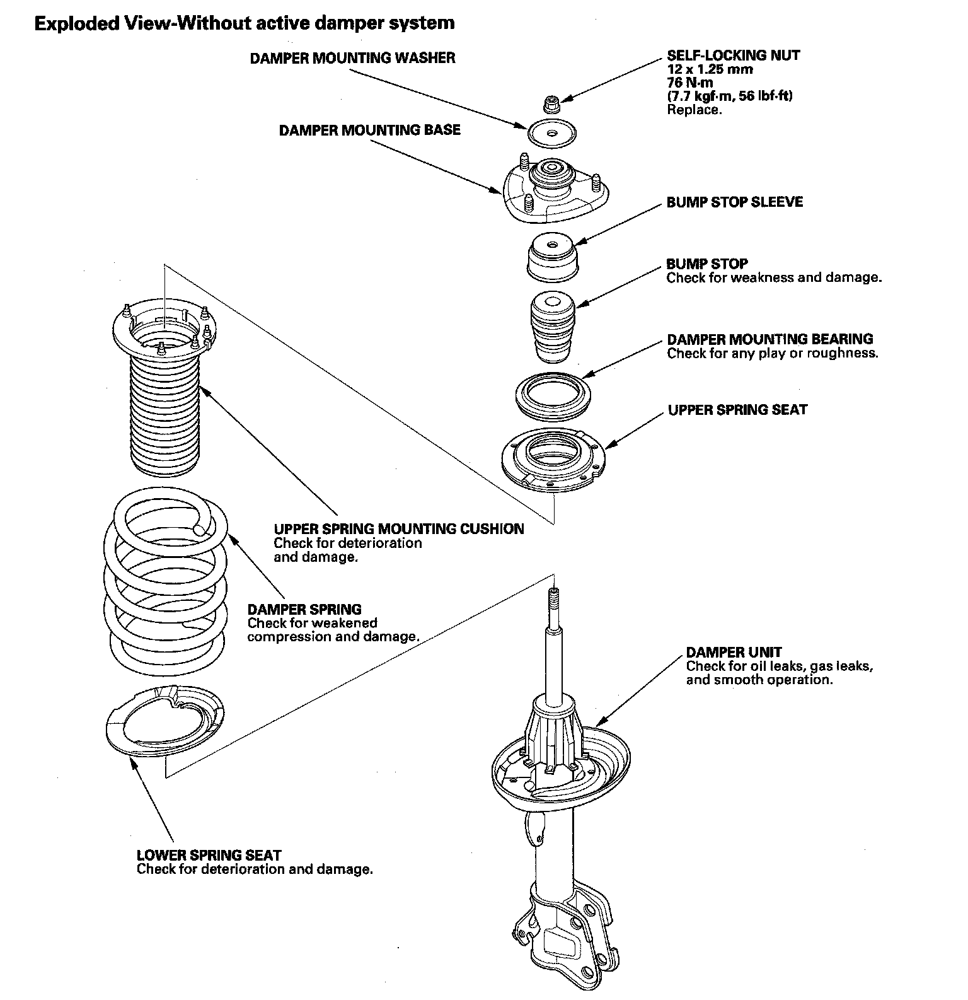
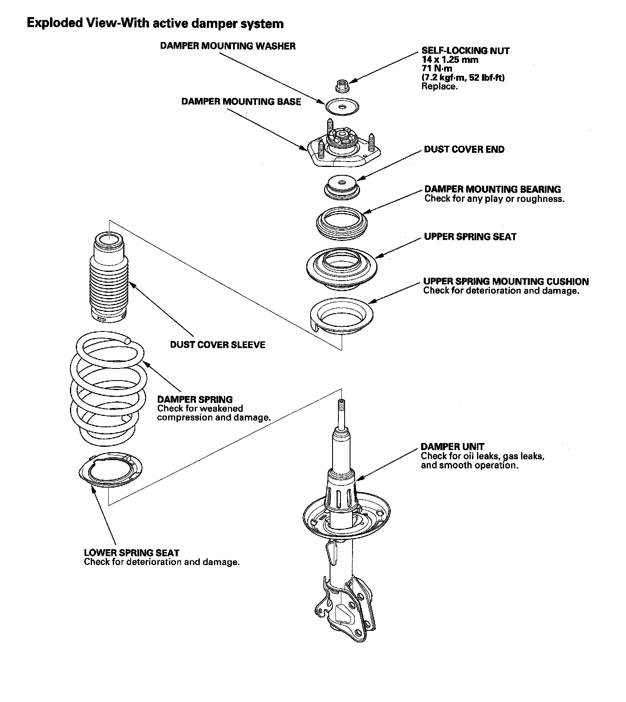
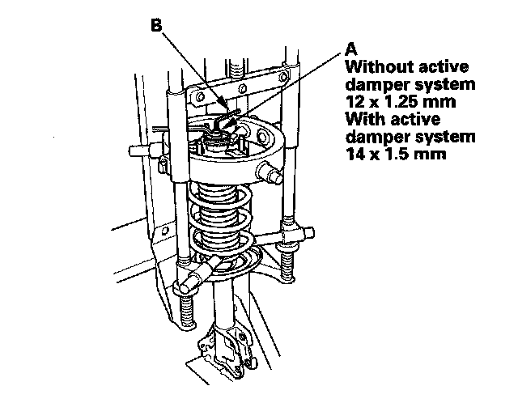
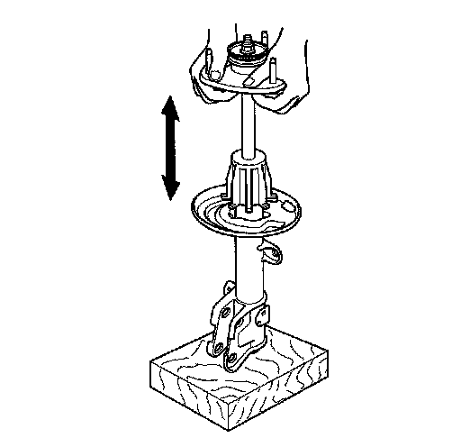
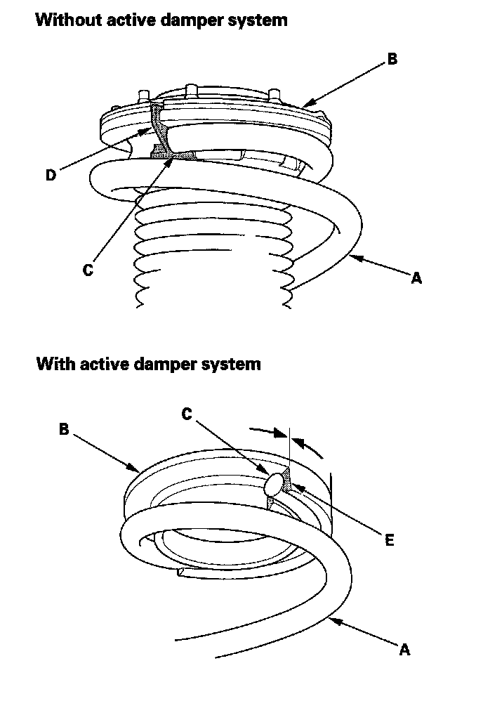
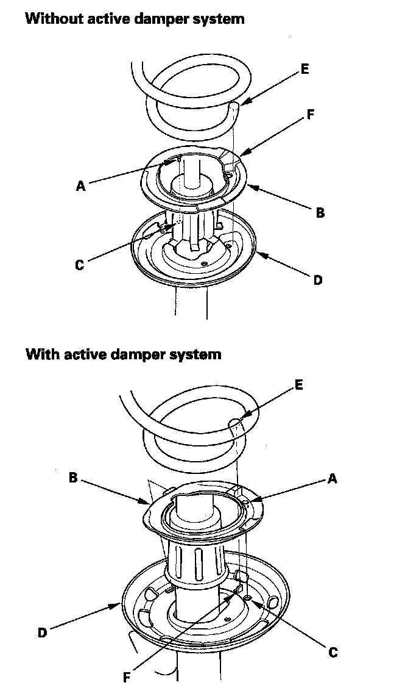
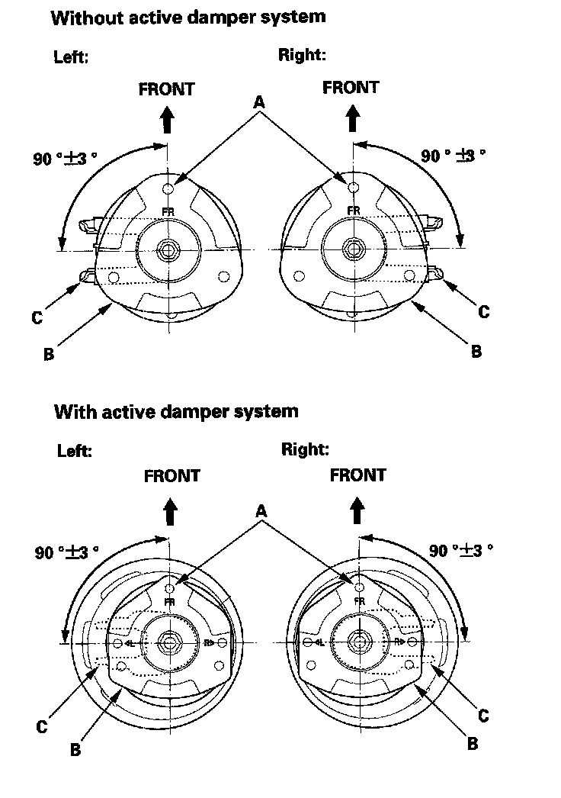
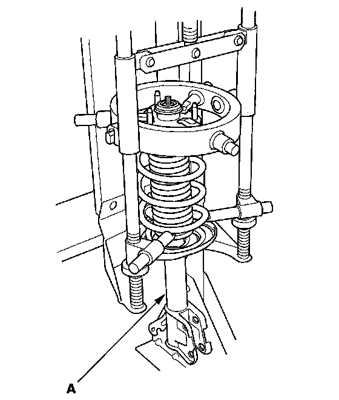
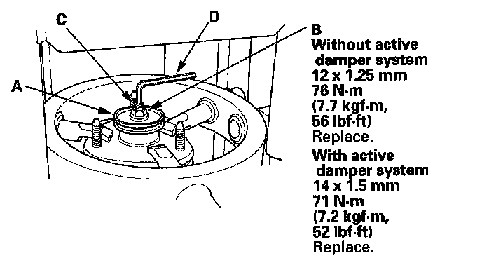

Overhaul
Damper/Spring Disassembly, Inspection, and ReassemblyDamper/Spring (Without Active Damper System):

Damper/Spring (With Active Damper System):

NOTE:
^ When compressing the damper spring, use a commercially available strut spring compressor (Branick MST-580A or Model 7200, or equivalent) according to the manufacturer's instructions.
^ Except where called out, the illustrations shown are without active damper system.
Disassembly
1. Compress the damper spring, then remove the nut (A) while holding the damper shaft with a hex wrench or TORX wrench (B). Do not compress the damper spring more than necessary to remove the nut.

2. Release the pressure from the strut spring compressor, then disassemble the damper as shown in the Exploded View.
Inspection
1. Reassemble all parts, except for the upper spring mounting cushion, the bump stop, and the damper spring.
2. Compress the damper assembly by hand, and check for smooth operation through a full stroke, both compression and extension. The damper should extend smoothly and constantly when compression is released. If it does not, the gas is leaking and the damper should be replaced.

3. Check for oil leaks, abnormal noises, and binding during these tests.
Reassembly
1. Install the damper spring (A) on the upper spring mounting cushion (B) then align the upper end (C) of the damper spring with the cushion stop (D) or the cushion end (E).

2. Install the tab (A) on the lower spring cushion (B) in the locating hole (C) on the damper unit (D).

3. Align the lower end (E) of the spring with the stepped part (F) of the lower spring seat.
4. Align the angle of the stud bolt (A) on the damper mounting base (B) and the damper bracket (C) as shown.

5. Compress the damper spring.
6. Install all the parts except the damper mounting washer and self-locking nut onto the damper unit (A) by referring to the Exploded View.

7. Install the damper mounting washer (A) and a new self-locking nut (B).

8. Hold the damper shaft (C) using a hex wrench or TORX wrench (D) and tighten the new self-locking nut to the specified torque value.